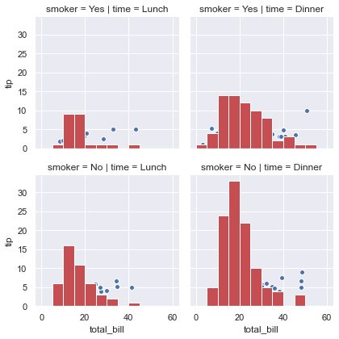
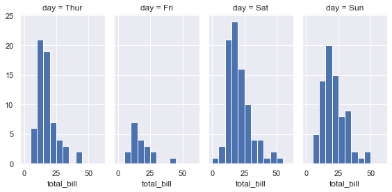
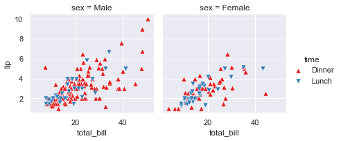
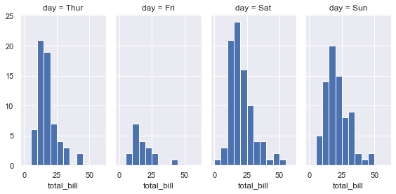
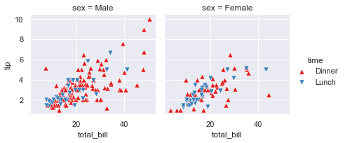
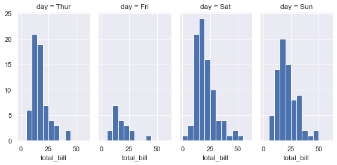
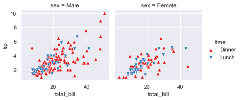

Seaborn Library¶
Descrizione¶
Dataset-Oriented Library
Importante:
Searbon è una libreria di data-visualization basata su Matplotlib e si integra in modo semplice con Pandas.
In questo notebook utilizzermo:
Pandas come database (dataframe)
Seaborn per visualizzare i dati
Informazioni utili:
import matplotlib.pyplot as plt
import seaborn as sns
import numpy as np
%matplotlib inline
# Behind the scene seaborn use matplotlib to draw the plot
# Apply default default seaborn theme, scaling, and color palette.
sns.set()
Dataset Organization¶
# Load dataset
tips = sns.load_dataset("tips") # same as pandas.read_csv()
display(tips.head())
# long form or tidy formatting dataset
# Ogni variabile è una colonna. A una variabile assegno un ruolo nel plot
# Ogni osservazione (observation) è una riga
# Usa pandas.melt() funtion for un-pivoting a wide-form dataframe
| total_bill | tip | sex | smoker | day | time | size | |
|---|---|---|---|---|---|---|---|
| 0 | 16.99 | 1.01 | Female | No | Sun | Dinner | 2 |
| 1 | 10.34 | 1.66 | Male | No | Sun | Dinner | 3 |
| 2 | 21.01 | 3.50 | Male | No | Sun | Dinner | 3 |
| 3 | 23.68 | 3.31 | Male | No | Sun | Dinner | 2 |
| 4 | 24.59 | 3.61 | Female | No | Sun | Dinner | 4 |
Convert long form to tidy format¶
# Dati andamento nazionale
import pandas as pd
df_naz = pd.read_csv("https://raw.githubusercontent.com/pcm-dpc/COVID-19/master/dati-andamento-nazionale/dpc-covid19-ita-andamento-nazionale.csv")
df_naz["data"] = pd.to_datetime(df_naz["data"]).dt.date
df_naz = df_naz.drop(columns=["stato", "note_it", "note_en"])
df_naz.head()
| data | ricoverati_con_sintomi | terapia_intensiva | totale_ospedalizzati | isolamento_domiciliare | totale_positivi | variazione_totale_positivi | nuovi_positivi | dimessi_guariti | deceduti | totale_casi | tamponi | casi_testati | |
|---|---|---|---|---|---|---|---|---|---|---|---|---|---|
| 0 | 2020-02-24 | 101 | 26 | 127 | 94 | 221 | 0 | 221 | 1 | 7 | 229 | 4324 | NaN |
| 1 | 2020-02-25 | 114 | 35 | 150 | 162 | 311 | 90 | 93 | 1 | 10 | 322 | 8623 | NaN |
| 2 | 2020-02-26 | 128 | 36 | 164 | 221 | 385 | 74 | 78 | 3 | 12 | 400 | 9587 | NaN |
| 3 | 2020-02-27 | 248 | 56 | 304 | 284 | 588 | 203 | 250 | 45 | 17 | 650 | 12014 | NaN |
| 4 | 2020-02-28 | 345 | 64 | 409 | 412 | 821 | 233 | 238 | 46 | 21 | 888 | 15695 | NaN |
df_naz_tidy = df_naz.melt('data', var_name='cols', value_name='vals')
df_naz_tidy.head()
| data | cols | vals | |
|---|---|---|---|
| 0 | 2020-02-24 | ricoverati_con_sintomi | 101.0 |
| 1 | 2020-02-25 | ricoverati_con_sintomi | 114.0 |
| 2 | 2020-02-26 | ricoverati_con_sintomi | 128.0 |
| 3 | 2020-02-27 | ricoverati_con_sintomi | 248.0 |
| 4 | 2020-02-28 | ricoverati_con_sintomi | 345.0 |
#https://matplotlib.org/3.2.1/api/_as_gen/matplotlib.pyplot.savefig.html_
fig_seaborn = sns.relplot(x="data", y="vals", hue="cols" ,data=df_naz_tidy, kind="line", height=10, aspect=2)
fig_seaborn.savefig("image.png", )

Possiamo usare la stessa logica di Seaborn per creare dei grafici interattivi usando la libreria plotly express. Di seguito un esempio.
import plotly.express as px
fig = px.scatter(df_naz_tidy, x="data", y="vals",color="cols")
fig.show()
Searborn scatter plot (replot)¶
# Load dataset
tips = sns.load_dataset("tips") # same as pandas.read_csv()
display(tips.head())
# Plot
sns.relplot(x="total_bill", y="tip", col="time",
hue="sex", style="smoker", size="size",
data=tips);
# Commento:
commento ='''
Mostra la relazione tra 5 diverse variabili
3 numeriche : total_bil, tip,size
2 categoriche: time, smoker
La variable categorica smoker divide il dataset in due assi.
Delle colonne x=total_bil e y=tip voglio
col="time" (col deve essere una variabile categorica) -> divide il grafico in n categorie
style="smoker" per ogni grafico (col="time) voglio che i dati (x-y) siano rappresentati con
simboli-stili diversi se sono smorker=Yes o No
hue="smoker" è uguale a style solo che qua cambiano i colori non i simboli
size= dimensione del marker
'''
| total_bill | tip | sex | smoker | day | time | size | |
|---|---|---|---|---|---|---|---|
| 0 | 16.99 | 1.01 | Female | No | Sun | Dinner | 2 |
| 1 | 10.34 | 1.66 | Male | No | Sun | Dinner | 3 |
| 2 | 21.01 | 3.50 | Male | No | Sun | Dinner | 3 |
| 3 | 23.68 | 3.31 | Male | No | Sun | Dinner | 2 |
| 4 | 24.59 | 3.61 | Female | No | Sun | Dinner | 4 |

# Dividi in N colonne (dipende dalle categorie della colonna time)
#sns.relplot(x="total_bill", y="tip", col="time", data=tips)
# Dividi N righe (dipende dalle categorie della colonna sex)
#sns.relplot(x="total_bill", y="tip", row="sex", data=tips)
# Conto totale vs mancie distinguendo maschio/femmina (basandoci sul colore)
#sns.relplot(x="total_bill", y="tip", hue="sex", data=tips)
# Conto totale vs mancie distinguendo maschio/femmina (basandoci sui simboli)
#sns.relplot(x="total_bill", y="tip", style="sex", palette="YlGnBu", data=tips)
sns.relplot(x="total_bill", y="tip", style="sex", palette="YlGnBu", markers=["v", "o"], edgecolor=".2", linewidth=.5, alpha=.75, data=tips)
# Importante:
# There is a direct correspondence with an underlying matplotlib function (like scatterplot()
# and matplotlib.axes.Axes.scatter()), additional keyword arguments will be passed through to
#the matplotlib layer
# markers type: https://matplotlib.org/3.2.1/api/markers_api.html
# Puoi usare qualueque di questi: https://matplotlib.org/api/_as_gen/matplotlib.axes.Axes.scatter.html#matplotlib.axes.Axes.scatter
# Conto totale vs mancie distinguendo maschio/femmina (basandoci sui simboli)) ,
# e distinguendo fumatore non fumatore (basandoci sui colori) --> tutto nello stesso grafico,
#sns.relplot(x="total_bill", y="tip", style="sex", hue="smoker", data=tips)
# Conto totale vs mancie distinguendo maschio/femmina (basandoci sui simboli)) ,
# e distinguendo fumatore non fumatore (basandoci sui colori) e facciamo il puntino/marker
# piu grande in base alla mancia ricevuta --> tutto nello stesso grafico,
# sizes = (min, max)
# legend = "brief", "full"
# kind = "scatter", "line"
#sns.relplot(x="total_bill", y="tip", kind="scatter", style="sex", hue="smoker", size="tip",sizes=(5,100), data=tips)
# Conto totale vs mancie distinguendo maschio/femmina (basandoci sui simboli)) ,
# e distinguendo fumatore non fumatore in due grafici diversi
# col_wrap, row_wrap = se per esempio avessimo time="colazione,pranzo,cena,spuntino",
# avrei potuto scriverec col="time" e col_wrap=2 e mi avrebbe craeato un grafico 2x2 invece che 1x4
# palette=["red", "blue"],style="sex" (distingue) maschio e femmina per tipo di marker
# pallette = "YlGnBu"
# hue="sex" (distingue maschio e femmina per colore, il colore è dato dal palette),
sns.relplot(x="total_bill", y="tip", col="smoker", row="time",height=5,aspect=1.5 , palette=["red", "blue"],style="sex", hue="sex", size="tip", sizes=(50,100),data=tips)
<seaborn.axisgrid.FacetGrid at 0x7fe2cffe75c0>

## FaceGrid example
# https://seaborn.pydata.org/generated/seaborn.FacetGrid.html
#sns.set(style="ticks", color_codes=True)
tips = sns.load_dataset("tips")
bins=np.arange(0, 65, 5)
g = sns.FacetGrid(tips, col="time", row="smoker")
g = g.map(plt.hist, "total_bill", bins=bins, color="r")
g = g.map(plt.scatter, "total_bill", "tip", edgecolor="w")
g = sns.FacetGrid(tips, col="time", hue="smoker")
g = (g.map(plt.scatter, "total_bill", "tip", edgecolor="w").add_legend())
g = sns.FacetGrid(tips, col="day", height=4, aspect=.5)
g = g.map(plt.hist, "total_bill", bins=bins)
#palette=pal
kws = dict(s=50, linewidth=.5, edgecolor="w")
g = sns.FacetGrid(tips, col="sex", hue="time", palette="Set1",
hue_order=["Dinner", "Lunch"],hue_kws=dict(marker=["^", "v"]))
g = (g.map(plt.scatter, "total_bill", "tip", **kws)
.add_legend())

 





Seaborn line plot (replot)¶
dots = sns.load_dataset("dots")
display(dots.tail(10))
sns.relplot(x="time", y="firing_rate", col="align",
hue="choice", size="coherence", style="choice",
facet_kws=dict(sharex=False),
kind="line", legend="full", data=dots);
sns.relplot(x="time", y="firing_rate", col="align",
hue="choice", size="coherence", style="choice",
facet_kws=dict(sharex=True),
kind="line", legend="full", data=dots);
# hue="choice" (line con colori diversi)
# style="choice" linee con stili diversi (diritta vs tratteggiata)
# size="coherence" dimensione della linea
# facet_kws=dict(sharex=False) mette a fuoco il contenuto del grafico
| align | choice | time | coherence | firing_rate | |
|---|---|---|---|---|---|
| 838 | sacc | T2 | 280 | 6.4 | 27.583979 |
| 839 | sacc | T2 | 280 | 12.8 | 28.511530 |
| 840 | sacc | T2 | 280 | 25.6 | 26.470588 |
| 841 | sacc | T2 | 280 | 51.2 | 30.813953 |
| 842 | sacc | T2 | 300 | 0.0 | 28.384913 |
| 843 | sacc | T2 | 300 | 3.2 | 33.281734 |
| 844 | sacc | T2 | 300 | 6.4 | 27.583979 |
| 845 | sacc | T2 | 300 | 12.8 | 28.511530 |
| 846 | sacc | T2 | 300 | 25.6 | 27.009804 |
| 847 | sacc | T2 | 300 | 51.2 | 30.959302 |

Seaborn Statistical Estimation and error bars (replot)¶
# Average Line statistical estimation
fmri = sns.load_dataset("fmri")
display(fmri.head())
sns.relplot(x="timepoint", y="signal", col="region",
hue="event", style="event",
kind="line", dashes=False, markers=False, data=fmri);
| subject | timepoint | event | region | signal | |
|---|---|---|---|---|---|
| 0 | s13 | 18 | stim | parietal | -0.017552 |
| 1 | s5 | 14 | stim | parietal | -0.080883 |
| 2 | s12 | 18 | stim | parietal | -0.081033 |
| 3 | s11 | 18 | stim | parietal | -0.046134 |
| 4 | s10 | 18 | stim | parietal | -0.037970 |
Seaborn Statistical Model estimation (lmsplot)¶
# logistic = True # logistic regression model
# robust = True # Robust regression model
# fit_reg = True # linear regression
# scatter = True # plot also the points down
tips = sns.load_dataset("tips") # same as pandas.read_csv()
display(tips.head())
sns.lmplot(x="total_bill", y="tip", col="time", hue="smoker", fit_reg=True, data=tips,scatter=False );
#sns.lmplot(x="total_bill", y="tip", col="time", hue="smoker", robust=True,data=tips);
| total_bill | tip | sex | smoker | day | time | size | |
|---|---|---|---|---|---|---|---|
| 0 | 16.99 | 1.01 | Female | No | Sun | Dinner | 2 |
| 1 | 10.34 | 1.66 | Male | No | Sun | Dinner | 3 |
| 2 | 21.01 | 3.50 | Male | No | Sun | Dinner | 3 |
| 3 | 23.68 | 3.31 | Male | No | Sun | Dinner | 2 |
| 4 | 24.59 | 3.61 | Female | No | Sun | Dinner | 4 |
ans = sns.load_dataset("anscombe")
display(ans.head())
ax = sns.regplot(x="x", y="y", data=ans.loc[ans.dataset == "I"], # II
scatter_kws={"s": 80},
order=10, ci=None) #ci=10
| dataset | x | y | |
|---|---|---|---|
| 0 | I | 10.0 | 8.04 |
| 1 | I | 8.0 | 6.95 |
| 2 | I | 13.0 | 7.58 |
| 3 | I | 9.0 | 8.81 |
| 4 | I | 11.0 | 8.33 |
Seaborn Categorical Plot (catplot)¶
tips = sns.load_dataset("tips") # same as pandas.read_csv()
display(tips.head())
sns.catplot(x="day", y="total_bill", hue="smoker",
kind="swarm", data=tips);
# kind swarm perchè si vuole raffigurare tutti i total_bill (conti) del giovedi
# by drawing a scatter plot that adjusts the positions of the points along the categorical axis so that they don’t overlap
# Domanda: perchè ci sono più punti a total_bill=10 day=Thur. Perchè ci sono stati molti conti a total_bil=10
| total_bill | tip | sex | smoker | day | time | size | |
|---|---|---|---|---|---|---|---|
| 0 | 16.99 | 1.01 | Female | No | Sun | Dinner | 2 |
| 1 | 10.34 | 1.66 | Male | No | Sun | Dinner | 3 |
| 2 | 21.01 | 3.50 | Male | No | Sun | Dinner | 3 |
| 3 | 23.68 | 3.31 | Male | No | Sun | Dinner | 2 |
| 4 | 24.59 | 3.61 | Female | No | Sun | Dinner | 4 |

# Se la granularity non ci convince nell'esprimere la quantità di conti a un certo valore
# possiamo usare il violin plot (kernel density estimation)
sns.catplot(x="day", y="total_bill", hue="smoker",
kind="violin", split=False,inner="box", data=tips);
# slipt = True, False
# inner = box, quartile, point stick None
# box plots show data points outside 1.5 * the inter-quartile range as outliers above or below the whiskers whereas violin plots show the whole range of the data.
# box plot risponde in modo rapido a quali sono per giorni i total_bill più comuni

# Mostriamo solo il valore medio e l 'intervallo (Box plot per vedere gli intervalli medi)
sns.catplot(x="day", y="total_bill", hue="smoker",
kind="box", data=tips);
# kind=bar

Seaborn with Matplotlib¶
sns.relplot(x="total_bill", y="tip", col="time",
hue="size", style="smoker", size="size",
palette="YlGnBu", markers=["D", "o"], sizes=(10, 125),
edgecolor=".2", linewidth=.5, alpha=.75,
data=tips);
# palette="muted"

g = sns.catplot(x="total_bill", y="day", hue="time",
height=3.5, aspect=1.5,
kind="box", legend=False, data=tips);
g.add_legend(title="Meal")
g.set_axis_labels("Total bill ($)", "")
g.set(xlim=(0, 60), yticklabels=["Thursday", "Friday", "Saturday", "Sunday"])
g.despine(trim=True)
g.fig.set_size_inches(6.5, 3.5)
g.ax.set_xticks([5, 15, 25, 35, 45, 55], minor=True);
plt.setp(g.ax.get_yticklabels(), rotation=30);

Data struncture¶
iris = sns.load_dataset("iris")
display(iris.head())
# kind="reg" (regression)
# kind="hex" #hexagonal bins
# kind="kde" # Replace the scatterplots and histograms with density estimates and align the marginal Axes tightly with the joint Axes:
sns.jointplot(x="sepal_length", y="petal_length", data=iris, kind="reg",space=0); # on histogram mostra kernel density , color="r"
sns.lmplot(x="sepal_length", y="petal_length", data=iris, hue="species")
| sepal_length | sepal_width | petal_length | petal_width | species | |
|---|---|---|---|---|---|
| 0 | 5.1 | 3.5 | 1.4 | 0.2 | setosa |
| 1 | 4.9 | 3.0 | 1.4 | 0.2 | setosa |
| 2 | 4.7 | 3.2 | 1.3 | 0.2 | setosa |
| 3 | 4.6 | 3.1 | 1.5 | 0.2 | setosa |
| 4 | 5.0 | 3.6 | 1.4 | 0.2 | setosa |
<seaborn.axisgrid.FacetGrid at 0x7fe2cf2ed7f0>
# Confusion matrix
sns.pairplot(data=iris, hue="species");
# palette="husl"